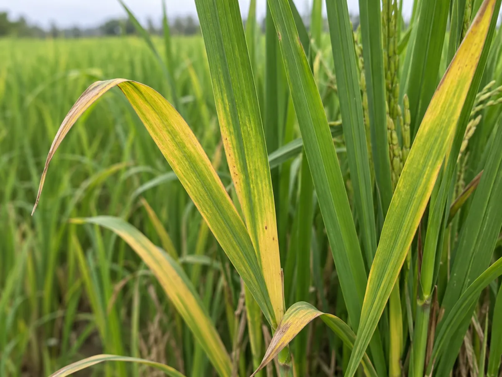

Rice ×Leaf problem ×
🎙
Ask, upload or speak—get trusted answers.

Yellowing leaves, especially older lower leaves, usually indicate a lack of nitrogen. This reduces chlorophyll and makes the plant look pale. It is a common problem during the tillering stage.